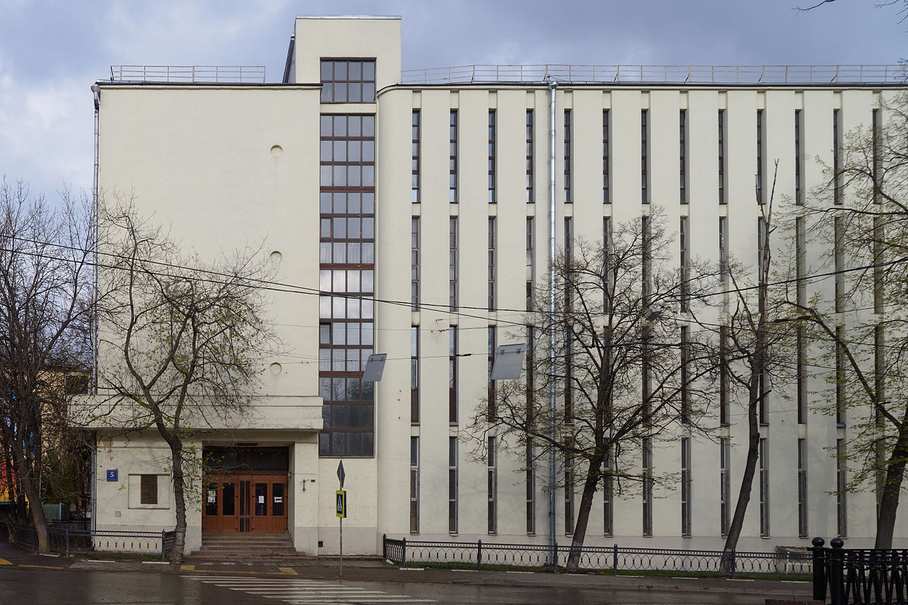

Таганская автоматическая телефонная станция
Тага́нская автомати́ческая телефо́нная ста́нция — постройка эпохи советского авангарда в Москве на Покровском бульваре, дом 5, строение 1.
Здание построено в 1929 г. по проекту архитектора В. С. Мартыновича в числе одной из пяти первых автоматических телефонных станций в Москве. Снесено в мае — июне 2016 на фоне громких протестов специалистов по архитектуре и общественности.
Архитектура
Здание Таганской АТС являлось ярким примером промышленной архитектуры эпохи авангарда и по своему пластическому решению, и по внутреннему устройству. Для 1920-х годов здания АТС — образцы новой архитектурной типологии, символы прогресса и технических достижений. Образ станции, следуя принципам архитекторов-конструктивистов, полностью диктовался своей функцией — в первую очередь, это здание для автоматических машин.
Асимметричный фасад был поделён на две неравных части вертикальным витражом лестничной клетки, слегка заглублённом относительно стен с выступающей башней над кровлей. Слева от витража — глухая стена с рядом круглых окон-«иллюминаторов», характерных для архитектуры авангарда. Ниже — монументальный козырёк над входом. Бо́льшая правая часть здания демонстрировала его функциональное содержание — она была разрезана узкими щелями-окнами, за которыми находилось оборудование станции. Этот приём позволял освещать залы, но избегать перегрева оборудования, и в данных пропорциях был исключительно изящен. В целом, значительный дореволюционный опыт работы архитектора Мартыновича, его образование (окончил Академию художеств в 1901 г.) добавляли модным в конце 1920-х годов конструктивистским приёмам совершенно нехарактерную для эпохи тонкость, пластичность, скульптурность. Среди пластических находок архитектора были — скругление стены в месте примыкания машинного зала к витражу лестницы, математически точно просчитанное пропорционирование отдельных частей и тонкая графика фасада, включающая напряжённый ритмические линии узких окон и «корабельные» перила на кровле.
Таганская АТС формировала угол застройки на участке между Покровским бульваром и Казарменным переулком. Продолжая линию бульвара, здание поддерживало композицию фасадов и масштаб расположенных рядом Покровских казарм. Гармонировало своими правильными объёмами и лаконичным решением внешней отделки со строгой классической застройкой квартала. Ритм узких оконных проёмов и простенков между ними отсылал к классическому фасаду, оформленному пилястрами. Таганская АТС представляла собой пример работы со средой, в которой современное здание с революционной архитектурой не пыталось имитировать историческую застройку, но за счёт глубокого понимания контекста и умелого использования современных архитектурных решений позволяло достигать гармонии старого и нового.
Внутреннее устройство и интерьеры
В подвальном этаже располагалась аккумуляторная, генераторная для питания аккумуляторов и вводная шахта для мощных кабелей. В первом этаже в непосредственной близости к входу — почтовое отделение и кабины для автоматов. По фасадной стене был размещён кросс над вводной шахтой. Расположение кросса в 1-м этаже было чрезвычайно удачным, так как не приходилось тянуть мощные кабели на второй и третий этажи, как это было сделано в других районных станциях. С противоположной стороны располагались бюро повреждений и подсобные помещения с гардеробной. Гардероб был размещён посреди коридора, что делало его использование не вполне удобным в оторванности от главного входа. Во втором и третьем этажах, с левой стороны от главной лестницы, помещались конторы, кабинеты обслуживающего персонала, местком и столовая с выходом на балкон. С правой стороны были расположены автоматические залы, каждый на 10 000 номеров в этаже (станция была рассчитана на 20 000 номеров). В четвёртом этаже были помещены кабинеты и автоматический узловой зал. Изначальная отделка интерьеров подверглась некоторым изменениям в ходе ремонта во второй половине ХХ века.
История
Таганская АТС — одна из первых автоматических (то есть таких, где соединение с абонентом не требовало участия оператора) телефонных станций в Москве. Построена в 1929 г., введена в эксплуатацию в 1933 г., до 1965 г. имела литеру «Г».
Отечественная история АТС начинается в 1923 г. с решения телефонной подсекции Госплана СССР: «За отсутствием опыта строительства и эксплуатации АТС построить несколько мелких станций». Во исполнение этого решения в 1924 г. в Московской телефонной сети для служебной связи была смонтирована опытная декадно-шаговая АТС на 1000 номеров фирмы «Сименс и Гальске» с задействованной ёмкостью 100 номеров. В СССР качестве базовой АТС были выбраны машинные станции «Л. М. Эриксон», которые стали производиться на заводе «Красная Заря» (Ленинград). В 1926 г. в Ростове-на-Дону была введена в строй первая в СССР автоматическая телефонная станция машинной системы «Л. М. Эриксон». Затем последовали станции в Москве, Новосибирске, Ташкенте, Смоленске, Ленинграде. Среди этих станций — нетиповой проект архитектора В. С. Мартыновича.
Здание АТС в культуре
Таганская АТС — одна из пяти первых московских автоматических АТС. Строительство подобных АТС — событие огромного значения для Москвы, благодаря автоматизации на данных станциях полностью изменившее развитие телефонной связи, превратившее её из эксклюзивной дорогой услуги для единиц в массовое средство коммуникации. Это историческое событие очень широко освещалось в средствах массовой информации того времени, в которых упоминалась и Таганская АТС, в частности, в знаменитом журнале «СССР на стройке». Архитектуре Таганской АТС была посвящена отдельная статья в журнале «Строительство Москвы» (1930, № 10), где был произведён подробный разбор достоинств и недостатков здания как одного из наиболее примечательных образцов новой архитектуры Москвы 1920-х годов. Статья о Таганской АТС вошла в книгу о важнейших памятниках авангарда Москвы. Включено в издание «Всеобщая история архитектуры в 12 томах».
Таганская АТС высоко ценилась экспертами и любителями архитектуры советского авангарда. Здание АТС представляло значительный интерес как объект туристического показа. Она была включена в путеводители и туристические маршруты. Здание был значимо и для локальных сообществ, местных жителей, среди которых много архитекторов, дизайнеров и художников. При смене функции здание (как и в первоначальном своем использовании) могло бы иметь общественные функции на первом этаже (коворкинг, кафе, культурный центр).
Под петицией о сохранении АТС было собрано более 36 000 подписей специалистов и простых горожан за период с 13 апреля по 4 мая 2016. Многие популярные СМИ рассказали о проблеме сохранения АТС (Телеканалы НТВ и «Культура», «Коммерсант», «Новая газета», «Парламентская газета», «Афиша», «Медуза» и др.)
Снос и борьба за сохранение
В феврале 2016 года департамент Мосгорнаследия отказал в присвоении зданию статуса памятника. Девелопер «Лидер-Инвест», дочерняя компания АФК «Система», решил снести станцию, а на её месте начать строительство 7-этажного комплекса апартаментов по проекту А. А. Кузьминой и других архитекторов ООО «Мезонпроект». В апреле 2016 года начавшиеся подготовительные работы по сносу спровоцировали беспрецедентную в истории российского градозащитного движения кампанию протестов за сохранение модернистского здания. Более 40 ведущих архитекторов, искусствоведов, специалистов в области культурного наследия (среди которых Е. В. Асс, А. Л. Баталов, А. С. Бродский, Ю. Э. Григорян, Н. О. Душкина, И. М. Коробьина, Н. С. Малинин, В. З. Паперный, Р. Э. Рахматуллин , Г. И. Ревзин, Хайбуллин Р. И., А. Д. Сарабьянов, С. А. Скуратов, С. Э. Чобан и другие) в открытом письме мэру Москвы С. С. Собянину высказались за сохранение АТС, указывая на уникальность архитектуры здания, значение для истории и гармоничное сочетание с застройкой Покровского бульвара:
«Данное здание никак нельзя считать, как утверждают представители застройщика, „утилитарной промышленной постройкой“. Это несомненный памятник архитектуры, который непременно должен быть внесён в государственный реестр. Мы выражаем свое несогласие с результатами проведённого Мосгорнаследием анализа историко-культурной ценности объекта, по результатам которого был выпущен приказ об отказе во включении здания в перечень выявленных объектов культурного наследия <…>. Считаем проведённую Мосгорнаследием работу по определению историко-культурной ценности здания АТС непрофессиональной, а результат предвзятым. В ходе принятия решения интересы застройщика были поставлены выше ценностей защиты наследия. Здание, возведённое в 1929 году на участке сложной формы, повернутом углом к Покровскому бульвару, — яркий пример промышленной архитектуры эпохи авангарда: и по своему пластическому решению, и по внутреннему устройству. Важно отметить, что проект не был типовым. Для 1920-х годов здания АТС — образцы новой архитектурной типологии, символы прогресса и технических достижений. Архитектор Василий Мартынович <…> гармонично вписал АТС в линию застройки бульвара и деликатно отнёсся к окружающим, более ранним постройкам. Здание с самого начала стало одним из символов „новой Москвы“, его фотографии неоднократно публиковались в отечественных и зарубежных журналах».
В ответе на это представители Москомнаследия заявили о том, что здание не было признано памятником из-за того, что оно диссонирует с архитектурой бульвара, неуникально и утратило функциональное назначение.
Архитектор Н. В. Лызлов предложил безвозмездно разработать проект перепрофилирования здания под альтернативное использование (в том числе, в качестве эксклюзивного апарт-отеля).
За сохранение АТС в течение 2 недель было собрано более 30 000 подписей москвичей и жителей других городов, которые были переданы в мэрию Москвы. Искусствоведы подали повторную заявку на признание здания памятником, указывая на низкое качество проведённой ранее экспертизы (были пропущены несколько пунктов по оценочному балльному вопроснику). Мэр Москвы С. С. Собянин никак не отреагировал ни на открытое письмо архитекторов и искусствоведов, ни на петицию, повторная заявка в Москомнаследие была отклонена, снос был завершён в первых числах июня 2016 года.